Aula 01: Introdução ao Word & Digitação Eficiente
Dominando a interface, as guias, atalhos do teclado e a régua de alinhamento. Leia com atenção e execute cada passo prático em seu computador!
🎯 Objetivo desta aula
Conhecer a área de trabalho do Microsoft Word, aprender os atalhos indispensáveis do dia a dia (como salvar com agilidade e aplicar formatação de texto) e dominar a régua de alinhamento para nunca mais apertar a barra de espaço repetidamente para afastar o início de um parágrafo.
🗺️ Roteiro Numerado (Passo a Passo em 5 Fases)
Os checks ficam distribuídos — posicionados no fim de cada fase, exatamente onde está a instrução de executar aquele passo. Cada passo é um check e só libera o próximo!
=rand().
- Abra o Microsoft Word em um documento em branco e mantenha a janela maximizada.
- Confira se a Faixa de Opções (Página Inicial, Inserir, Layout da Página) está visível no topo.
- Se a régua horizontal não estiver aparecendo, clique na guia Exibir e marque a caixinha Régua.
1. A Área de Trabalho e a Faixa de Opções
O Microsoft Word foi criado em 1983 pela empresa norte-americana Microsoft e tornou-se o padrão da indústria para edição e processamento de textos. Ele faz parte do pacote Microsoft Office, convivendo ao lado do Excel e do PowerPoint.
Diferente de um simples bloco de notas, o Word permite diagramar páginas inteiras, inserir imagens, formatar tabelas, aplicar estilos e preparar documentos para impressão ou publicação em PDF.
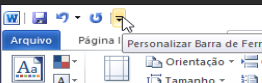
Imagem 01/08 — Barra de Ferramentas de Acesso Rápido no canto superior esquerdo do Word.
Anatomia da Interface
Observe os 6 componentes fundamentais da tela do Word:
- 1. Barra de Título: No topo da janela, exibe o nome do arquivo ativo (ex.: Documento1) e os botões de janela (minimizar, maximizar, fechar).
- 2. Barra de Ferramentas de Acesso Rápido: No canto superior esquerdo, traz botões rápidos como Salvar, Desfazer e Refazer, personalizáveis com a setinha para baixo.
- 3. Faixa de Opções (Ribbon): Organizada em Guias temáticas (Página Inicial, Inserir, Layout da Página, Referências, Revisão, Exibir).
- 4. Folha de Papel em Branco: A área de trabalho central que representa fielmente a página física que será impressa.
- 5. Barra de Status: Rodapé inferior com contagem de páginas, contador de palavras em tempo real e idioma do corretor.
- 6. Controle de Zoom: No canto inferior direito, permite ampliar ou reduzir o documento de 10% a 500%.
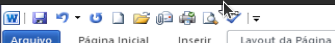
Imagem 02/08 — Faixa de Opções dividida em Guias e Grupos de comandos.
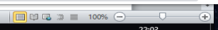
Imagem 03/08 — Controle deslizante de zoom no canto inferior direito da Barra de Status.
📋 Resumo das Principais Guias do Word
| Guia | Grupos Mais Usados | Função Principal no Dia a Dia |
|---|---|---|
| 🏠 Página Inicial |
Fonte
Parágrafo
Estilos
|
Tamanho da letra, cores, negrito, alinhamentos, marcadores e espaçamento entre linhas. |
| ➕ Inserir |
Páginas
Tabelas
Ilustrações
Cabeçalho e Rodapé
|
Colocar elementos externos: fotos, formas geométricas, tabelas, gráficos e números de página. |
| 📐 Layout da Página |
Configurar Página
Parágrafo
|
Ajustar margens (normas ABNT), orientação da folha (Retrato ou Paisagem) e divisão em colunas. |
| ✍️ Revisão |
Revisão de Texto
Comentários
|
Verificar ortografia e gramática (F7), dicionário de sinônimos e adicionar anotações/comentários. |
| 👁️ Exibir |
Mostrar
Zoom
Janela
|
Ativar e desativar a Régua, linhas de grade, modos de leitura e controle de zoom na tela. |
Localizei as guias Página Inicial, Inserir e Layout da Página na Faixa de Opções, identifiquei a barra de acesso rápido e o controle de zoom. Marque ao concluir para liberar o Passo 2 →
2. Atalhos Essenciais no Word em Português
No mercado de trabalho, a velocidade na produção de relatórios e documentos depende diretamente do domínio do teclado. Retirar a mão do teclado para pegar o mouse a cada palavra faz você perder até metade do seu tempo produtivo.
⚡ Atalhos Fundamentais de Alta Produtividade
| Atalho | Nome da Ação | O Que Faz no Documento |
|---|---|---|
| Ctrl + B Salvar | Salvar Documento | Grava o arquivo ativo no disco rígido ou pen drive imediatamente sem perder nada. |
| Ctrl + N | Negrito | Destaca o texto selecionado tornando os traços da fonte mais grossos e evidentes. |
| Ctrl + I | Itálico | Inclina suavemente a fonte selecionada (ideal para termos estrangeiros ou citações). |
| Ctrl + S Atenção | Sublinhado | Insere uma linha contínua sob o texto selecionado (no Word em PT-BR não salva!). |
| Ctrl + T | Selecionar Tudo | Seleciona todo o texto, tabelas e imagens do documento com um só comando. |
| Ctrl + Z | Desfazer | Cancela a última ação executada (salva-vidas para quando você apaga algo sem querer). |
| Ctrl + Y | Refazer | Repete a ação que acabou de ser desfeita pelo comando Desfazer. |
| Ctrl + C | Copiar | Copia o trecho selecionado para a Área de Transferência (memória temporária). |
| Ctrl + X | Recortar | Remove o trecho do local original preparando-o para ser transferido para outro ponto. |
| Ctrl + V | Colar | Insere na posição atual do cursor o texto ou imagem copiado ou recortado. |
⚠️ ALERTA CONTRA O ERRO MAIS COMUM NO WORD EM PORTUGUÊS
Em navegadores de internet e programas em inglês, o atalho para salvar é Ctrl + S (de Save).
Porém, no Microsoft Word em português:
• Ctrl + S aplica SUBLINHADO (letra inicial de Sublinhado)!
• Para SALVAR, você deve apertar Ctrl + B (memorize como Baixar cópia ou Backup).
Entendi a diferença dos atalhos em português: Ctrl + B para Salvar e Ctrl + S para Sublinhado, além de Ctrl + N e Ctrl + T. Marque ao concluir para liberar o Passo 3 →
3. O Comando Mágico =rand() e Seleção com Mouse
Quando precisamos testar fontes, cores, recuos ou tamanhos no Word, é comum ver alunos perderem minutos preciosos digitando frases aleatórias ou teclando letras sem sentido. O Word possui um comando nativo secreto desenvolvido justamente para gerar parágrafos demonstrativos perfeitos.
✨ Como usar o gerador automático: =rand(p, l)
Em uma linha totalmente em branco no início do documento, digite exatamente:
=rand(3,4)
e em seguida pressione a tecla Enter!
• O primeiro número (3) é a quantidade de parágrafos.
• O segundo número (4) é a quantidade de frases por parágrafo.
Instantaneamente, o Word criará 3 parágrafos completos em português prontos para praticarmos!
Técnicas Profissionais de Seleção com o Mouse
No Word, a regra de ouro para qualquer formatação é: primeiro selecione, depois aplique o comando. Pratique as seguintes ações com o mouse:
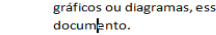
Imagem 04/08 — Um clique simples apenas posiciona o cursor de inserção no meio da palavra.
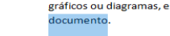
Imagem 05/08 — Dois cliques rápidos selecionam a palavra inteira sem precisar arrastar.
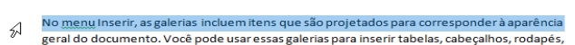
Imagem 06/08 — Posicione a seta do mouse na margem branca esquerda (ela fica inclinada para a direita) e dê 1 clique para selecionar a linha inteira.
🖱️ Guia Rápido dos Cliques de Seleção
| Ação do Mouse | O que Seleciona | Aplicação Prática no Texto |
|---|---|---|
| 🖱️ 1 Clique simples | 📍 Cursor | de inserção | Posiciona o cursor exato para começar a digitar, inserir pontuação ou apagar uma letra. |
| 🖱️🖱️ 2 Cliques rápidos | Palavra inteira | Aplica negrito, muda a cor, corrige grafia ou substitui uma palavra com agilidade cirúrgica. |
| 🖱️🖱️🖱️ 3 Cliques rápidos | Parágrafo inteiro | Seleciona todo o bloco de texto para justificar, alterar o espaçamento ou aplicar recuo. |
| ⬅️ 1 Clique na margem | Linha horizontal inteira | Posicione a seta branca na margem esquerda (seta vira para direita) e formate títulos ou tópicos. |
| Ctrl + 1 Clique | Frase completa | Seleciona automaticamente do início da frase até o ponto final, sem pegar o resto do parágrafo. |
Gerei parágrafos de teste digitando
=rand(3,4) e pratiquei os cliques com o mouse (duplo clique na palavra, triplo no parágrafo e clique na margem).
Marque ao concluir para liberar o Passo 4 →
4. A Régua e os 3 Marcadores de Recuo
Muitos iniciantes cometem o erro grave de apertar a barra de espaço 10 ou 15 vezes no início de cada parágrafo para fazer o afastamento do texto. Isso é considerado um vício de digitação amador, pois ao trocar o tamanho da letra ou abrir o arquivo em outro computador, todas as linhas ficam desalinhadas!
No Word profissional, o afastamento de parágrafos é controlado exclusivamente pela Régua Horizontal ou pela tecla Tab.
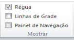
Imagem 07/08 — Para exibir a régua: Guia Exibir > marcar a caixa 'Régua'.
Dissecando os 3 Marcadores da Régua Horizontal
Observe atentamente a ponta esquerda da régua horizontal. Ela parece uma única peça, mas na verdade é dividida em 3 partes móveis independentes:
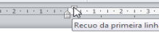
Imagem 08/08 — O Triângulo Superior controla o recuo da primeira linha do parágrafo (1,25 cm na ABNT).
Afasta exclusivamente a primeira linha de cada parágrafo selecionado. Na norma ABNT brasileira, a primeira linha deve ficar afastada exatamente 1,25 cm da margem esquerda.
Faz o efeito oposto: mantém a primeira linha encostada na margem esquerda e afasta todas as outras linhas seguintes do parágrafo. Muito utilizado em listas bibliográficas e termos contratuais.
Ao clicar e arrastar o pequeno retângulo na base, todo o parágrafo é movido junto (tanto a primeira linha quanto as demais). Na ABNT, é usado para citações diretas longas com mais de 3 linhas (recuo de 4,0 cm).
Compreendi como ativar a régua e diferenciar os 3 marcadores (Triângulo Superior para Primeira Linha de 1,25 cm, Triângulo Inferior para Recuo Deslocado e Retângulo para Recuo Total). Marque ao concluir para liberar o Passo 5 →
5. Ergonomia, Posição das Mãos e Teclas Especiais
Passar horas digitando de forma inadequada causa fadiga muscular e lesões por esforço repetitivo (LER/DORT). Uma postura ergonômica garante conforto, saúde e precisão na digitação diária.
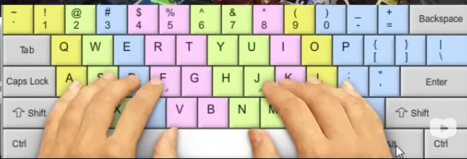
Imagem 09/09 — Posição correta dos dedos na Linha Guia do teclado.
A Linha Guia do Teclado (ASDF - JKLÇ)
Observe atentamente o seu teclado físico: as letras F e J possuem pequenos relevos ou traços salientes. Esses traços servem para você posicionar os dedos indicadores sem precisar olhar para o teclado!
- Mão Esquerda (ASDF): Mindinho no A, Anelar no S, Médio no D e Indicador no F.
- Mão Direita (JKLÇ): Indicador no J, Médio no K, Anelar no L e Mindinho no Ç.
- Polegares: Ficam suavemente apoiados sobre a Barra de Espaço.
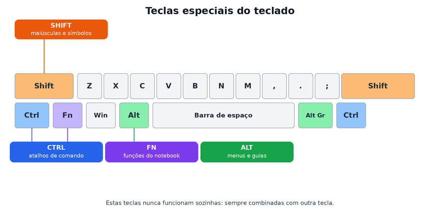
Imagem 10/10 — Teclas especiais: Shift, Ctrl, Alt e CapsLock.
⌨️ Teclas Especiais Indispensáveis no Word
| Tecla | Função Principal no Word | Diferencial & Regra Prática |
|---|---|---|
| Shift ⇧ | Maiúscula pontual ou caractere superior | Ao soltar, o teclado volta imediatamente a minúsculas. Ideal para início de frase ou nomes próprios. |
| Caps Lock | Trava o teclado em maiúsculas | Deve ser usada com cautela: apenas para títulos inteiros ou siglas (ex.: ABNT). |
| Backspace ⌫ | Apaga o caractere à ESQUERDA | Move o cursor voltando e 'comendo' as letras que ficaram para trás. |
| Delete / Del | Apaga o caractere à DIREITA | Puxa o caractere que está na frente do cursor e o apaga sem recuar o cursor. |
| Alt Gr | Terceira função das teclas | Mantendo pressionado, digita os símbolos do canto inferior direito: ², ³, ª, º e §. |
| Tab ↹ | Salto de parágrafo ou célula | Aplica o recuo padrão de primeira linha (1,25 cm) com um só toque, ou navega entre células de tabelas. |
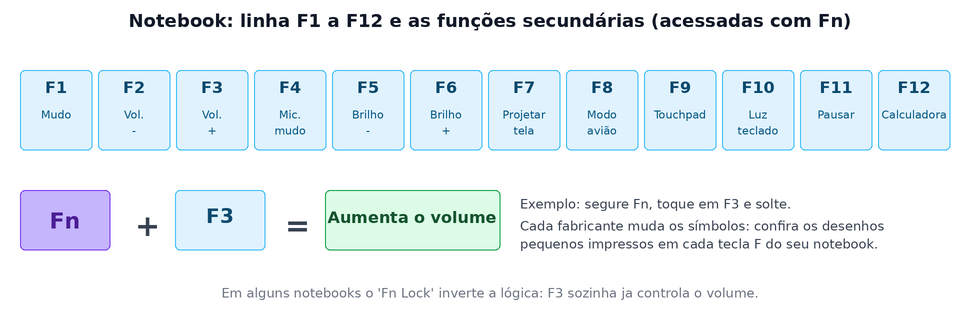
Imagem 11/11 — Em notebooks, a tecla Fn combinada com F1..F12 controla volume, brilho e projeção.
Posicionei as mãos na linha guia (ASDF e JKLÇ), entendi a diferença entre Backspace e Delete e como usar Shift e Alt Gr. Marque ao concluir para liberar o Exercício de Fixação →
Exercício de Fixação — Aula 01 (Word)
Gabarito Comentado
Clique abaixo para abrir seu aplicativo de e-mail com o comprovante pronto: